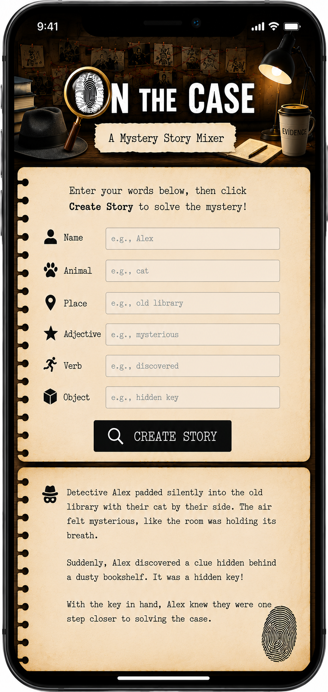
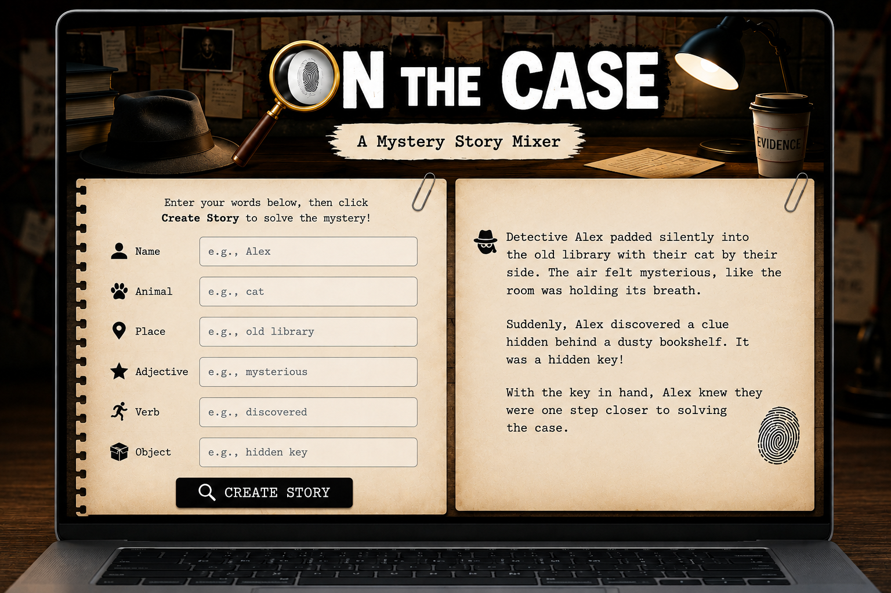

Overview
Purpose
On the Case is a detective-themed story mixer inspired by Mad Libs. Users provide a name, animal, place, adjective, verb, and object, and the application combines those words with randomized story segments to create a unique mystery.
Audience
The target audience is children, teens, and adults who enjoy interactive detective stories, word games, and creative storytelling. The application is designed to be easy to use, visually engaging, and entertaining for casual users of all ages.
Dynamic elements
When the user clicks "Create Story" (which has an event listener) javascript will read the values from their input for name, animal, place, adjective, verb, and object. Validation will check that all 6 form fields have content filled in through conditional branching. The story will be composed through randomly selected story parts consisting of one beginning, one middle, and one ending that are held in arrays and joined by javascript. Also, Javascript will replace placeholders within the story parts with the user input words - example: animal / cat.
Branding
Website Logo
Style Guide
Color Palette
Palette URL: https://coolors.co/2b2b2b-f2e4c8-b08d57-4a3728-a8a19a| Primary | Secondary | Accent 1 | Accent 2 |
|---|---|---|---|
| [#2B2B2B] | [#F2E4C8] | [#B08D57] | [#4A3728] |
Pseudocode for your project
When the page loads Display the input form fields for name, animal, place, adjective, verb, and object along with a button to submit When the user clicks the create story button Get the six input values from the form Randomly select one beginning Randomly select one middle Randomly select one ending Replace all placeholders with the user's input values from the form Combine the three story sections into one story If the screen is mobile Display the first section Wait for continue Display the second section Wait for Solve the Case Display the final section Otherwise Display the complete story
Wireframes
Create wireframes for your project page(s). One for each page and list them here.
Mobile
The header graphic isn't final for mobile or desktop.

Desktop / Laptop
